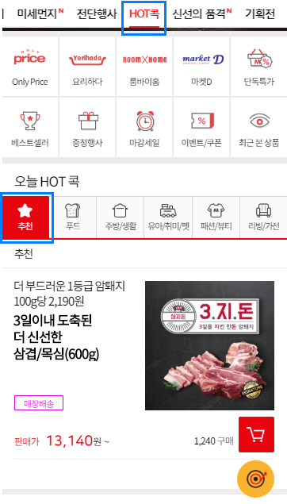
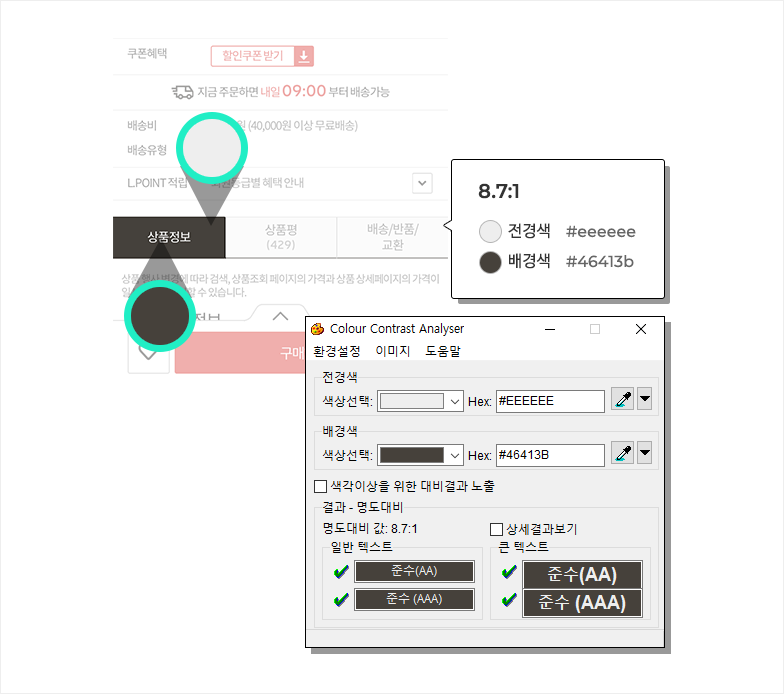

장애인이 비장애인과 동등하게 모바일 애플리케이션에 접근하여 이용하기 위해서 반드시 준수해야 하는 사항
<i class="icon-common-originalimage">이미지 원본 보기</i>

<a href="javascript:couponDownFn('C00000004970891','04')" data-couponid="C00000004970891;" class="download">쿠폰다운로드</a>
<li class="swiper-slide" data-swiper-slide-index="4">
<a href="http://m.lottemart.com/mobile/cate/PMWMCAT0004_New.do?CategoryID=C001&ProductCD=D000003682312&ad_sect=mml_3" name="productName">
<img src="//simage.lottemart.com/lm2/images/contents/2019/03/D000003682312_584_306.jpg" alt="닭고기/오리고기 전품목 20%할인 동물복지 닭볶음탕 1kg/냉장 8,500 → 6,800원 L.POINT 할인" data-gtm="M119">
</a>
</li>
<img src="http://image.lottemart.com/lim/static_root/images/front/banner/20190320022847179.jpg" alt="kokBtn1"냉장" 닭고기="" º오리고기="" 전품목="" l.point="" 20%"="">
색상 구분을 하지 못하더라도, 선택된 요소들을 구별 할 수 있도록 표현하여 제공합니다.
전경색과 배경색의 대비가 7:1 이상으로, 글자의 구분이 확실히 가능도록 제공되고 있습니다.

컴퓨터나 모바일을 사용할 때 화면에 표시되는 입출력 정보를 음성으로 알려주는 프로그램입니다.
전경색과 배경색의 명도 차이를 비교할 수 있게 도와주는 확장 프로그램과 화면을 고대비로 전환할 수 있는 프로그램입니다.